Readings in Tokugawa Thought: Select Papers, Volume 9, Third Edition
B005GIPATM

Structure and Interpretation of Computer Programs, Second Edition
Harold Abelson, Gerald Jay Sussman, Julie Sussman
0070004846
With an analytical and rigorous approach to problem solving and programming techniques, this book is oriented toward engineering. Structure and Interpretation of Computer Programs emphasizes the central role played by different approaches to dealing with time in computational models. Its unique approach makes it appropriate for an introduction to computer science courses, as well as programming languages and program design.

The Education of Henry Adams
Henry Adams
067964010X
'I cannot remember when I was not fascinated by Henry Adams,' said Gore Vidal. 'He was remarkably prescient about the coming horrors.'His political ideals shaped by two presidential ancestors—great-grandfather John Adams and grandfather John Quincy Adams—Henry Adams was one of the most powerful and original minds to confront the American scene from the Civil War to the First World War.
Printed privately in 1907 and published to wide acclaim shortly after the author&'s death in 1918, The Education of Henry Adams is a brilliant, idiosyncratic blend of autobiography and history that charts the great transformation in American life during the so-called Gilded Age.
With an introduction by renowned historian Edmund Morris.
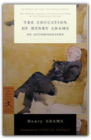
Aeschylus I: Oresteia: Agamemnon, The Libation Bearers, The Eumenides
Aeschylus, David Grene, Richmond Lattimore
0226307786
"These authoritative translations consign all other complete collections to the wastebasket."—Robert Brustein, The New Republic"This is it. No qualifications. Go out and buy it everybody."—Kenneth Rexroth, The Nation
"The translations deliberately avoid the highly wrought and affectedly poetic; their idiom is contemporary....They have life and speed and suppleness of phrase."—Times Education Supplement
"These translations belong to our time. A keen poetic sensibility repeatedly quickens them; and without this inner fire the most academically flawless rendering is dead."—Warren D. Anderson, American Oxonian
"The critical commentaries and the versions themselves...are fresh, unpretentious, above all, functional."—Commonweal
"Grene is one of the great translators."—Conor Cruise O'Brien, London Sunday Times
"Richmond Lattimore is that rara avis in our age, the classical scholar who is at the same time an accomplished poet."—Dudley Fitts, New York Times Book Review

Compilers: Principles, Techniques, and Tools
Alfred V. Aho, Ravi Sethi, Jeffrey D. Ullman
0201100886
This introduction to compilers is the direct descendant of the well-known book by Aho and Ullman, Principles of Compiler Design. The authors present updated coverage of compilers based on research and techniques that have been developed in the field over the past few years. The book provides a thorough introduction to compiler design and covers topics such as context-free grammars, fine state machines, and syntax-directed translation. 0201100886B04062001

Fieldbook: Boy Scouts of America
Boy Scouts of America, John J. Breitling
B0012ONH30
Full of great photos and illustrations and of course useful and practical tips!

The Lost Explorer : Finding Mallory On Mount Everest
Conrad Anker, David Roberts
0684871513
This is the adventure story of the year — how Conrad Anker found the body of George Mallory on Mount Everest, casting an entirely new light on the mystery of the explorer who may have conquered Everest seventy-five years ago.On June 8, 1924, George Leigh Mallory and Andrew "Sandy" Irvine were last seen climbing toward the summit of Mount Everest. Clouds soon closed around them, and they vanished into history. Ever since, mountaineers have wondered whether they reached the summit twenty-nine years before Edmund Hillary and Tenzing Norgay.
On May 1, 1999, Conrad Anker, one of the world's strongest mountaineers, discovered Mallory's body lying facedown, frozen into the scree and naturally mummified at 27,000 feet on Everest's north face. The condition of the body, as well as the artifacts found with Mallory, including goggles, an altimeter, and a carefully wrapped bundle of personal letters, are important clues in determining his fate. Seventeen days later, Anker free-climbed the Second Step, a 90-foot sheer cliff that is the single hardest obstacle on the north ridge. The first expedition known to have conquered the Second Step, a Chinese team in 1975, had tied a ladder to the cliff, leaving unanswered the question of whether Mallory could have climbed it in 1924. Anker's climb was the first test since Mallory's of the cliff's true difficulty. In treacherous conditions, Anker led teammate Dave Hahn from the Second Step to the summit.
Reflecting on the climb, Anker explains why he thinks Mallory and Irvine failed to make the summit, but at the same time, he expresses his awe at Mallory's achievement with the primitive equipment of the time. Stunningly handsome andcharismatic, Mallory charmed everyone who met him during his lifetime and continues to fascinate mountaineers today. He was an able writer, a favorite of the Bloomsbury circle, and a climber of legendary gracefulness. "The Lost Explorer" is the remarkable story of this extraordinarily talented man and of the equally talented modern climber who spearheaded a discovery that may ultimately help solve the mystery of Mallory's disappearance.
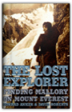
Modern Philosophy: An Anthology of Primary Sources
Roger Ariew, Eric Watkins
0872204405
This new anthology offers the key works of seven major philosophers along with a rich selection of associated texts by other leading thinkers of the period chosen to enhance the reader's understanding of modern philosophy and its relationship to the natural science of the time. A brief general introduction describes the intellectual climate in which the works to follow were conceived. Short chapter introductions give pertinent details about specific philosophers and their works. Texts are provided in their entirety or in substantive selections, including a new abridgement of Kant's Critique of Pure Reason commissioned especially for this volume. Alternatives to the 'main' texts — for example, Kant's Prolegomena is also included — give instructors flexibility while providing students with the best translations of the primary source materials at an eminently reasonable price. Roger Ariew is Professor of Philosophy and Eric Watkins is Assistant Professor of Philosophy, Virginia Polytechnic Institute and State University.

Nicomachean Ethics
Aristotle
0872204642
Building on the strengths of the first edition, the second edition of the Irwin Nicomachean Ethics features a revised translation (without extensive editorial intervention), expanded notes (including a summary of the argument of each chapter), an expanded Introduction, and a revised glossary.Terence Irwin is Susan Linn Sage Professor of Philosophy, Cornell University.

After Thought: The Computer Challenge To Human Intelligence
James Bailey
0465007813
Through the first fifty years of the computer revolution, scientists have been trying to program electronic circuits to process information the same way humans do. Doing so has reassured us all that underlying every new computer capability, no matter how miraculously fast or complex, are human thought processes and logic. But cutting-edge computer scientists are coming to see that electronic circuits really are alien, that the difference between the human mind and computer capability is not merely one of degree (how fast), but of kind(how). The author suggests that computers “think” best when their “thoughts” are allowed to emerge from the interplay of millions of tiny operations all interacting with each other in parallel. Why then, if computers bring to the table such very different strengths and weaknesses, are we still trying to program them to think like humans? A work that ranges widely over the history of ideas from Galileo to Newton to Darwin yet is just as comfortable in the cutting-edge world of parallel processing that is at this very moment yielding a new form of intelligence, After Thought describes why the real computer age is just beginning.

Sources of Japanese Tradition, Volume One: From Earliest Times to 1600
Wm. Theodore de de Bary, Donald Keene, George Tanabe, Paul Varley
0231121393
Sources of Japanese Tradition is a best-selling classic, unrivaled for its wide selection of source readings on history, society, politics, education, philosophy, and religion in the Land of the Rising Sun. In this long-awaited second edition, the editors have revised or retranslated most of the texts in the original 1958 edition, and added a great many selections not included or translated before. They have also restructured volume 1 to span the period from the early Japanese chronicles to the end of the sixteenth century. New additions include:o readings on early and medieval Shinto and on the tea ceremony,
o readings on state Buddhism and Chinese political thought influential in Japan, and
o sections on women's education, medieval innovations in the uses of history, and laws and precepts of the medieval warrior houses.
Together, the selections shed light on the development of Japanese civilization in its own terms, without reference to Western parallels, and will continue to assist generations of students and lay readers in understanding Japanese culture.

More Everyday Wisdom: Trail-Tested Advice from the Experts
Karen Berger
0898868998
Want to know why a forest smells different before it starts to rain? Or how long a pair of hiking boots should actually last? Find these answers and more in this pack-perfect book.More Everyday Wisdom provides brilliant improvisations for worst-case scenarios and advice to avoid the most common (and obscure) problems. These backcountry basics will help you plan your trips, become a better problem-solver, and learn to how to stay comfortable.

Matter in Equilibrium: Statistical Mechanics and Thermodynamics includes CD-ROM
R. Stephen Berry, Stuart A. Rice, John Ross
0195147499
Originally Part II of Physical Chemistry, Second Edition, and now published as its own volume, Matter in Equilibrium: Statistical Mechanics and Thermodynamics simultaneously develops the statistical molecular theory and the classical thermodynamic theory of the bulk properties of matter in a mutually reinforcing fashion. Despite presenting both a microscopic and macroscopic approach, this sophisticated text offers a rigorous treatment of classical thermodynamics and allows professors to separate the two theories if desired. Packed with tables, graphs, and figures, it describes the equilibrium properties of bulk matter and develops the tools needed to study gases, solids, liquids, phase transformations, solutions of nonelectrolytes, and solutions of electrolytes. The book makes extensive use of computer simulations of molecular behavior and, where appropriate, uses experimental data to illustrate concepts and principles. Ideal for advanced undergraduate and beginning graduate level courses, Matter in Equilibrium broadens and challenges student perspectives while offering valuable information to researchers.

Training for Speed, Agility, and Quickness
Lee E. Brown, Vance A. Ferrigno, Juan Carlos Santana
0736002391
Athletes and coaches serious about performance use speed, agility and quickness (SAQ) drills to gain an extra step on the competition. In this book more than 200 of the best possible drills for developing these three key athletic skills are included, with diagrams showing how to correctly perform the exercises. It also provides all the tools to design customised workouts based on individual athlete needs. SAQ development programmes are included for baseball and softball, volleyball, American football, tennis, soccer, hockey, basketball, netball, cricket, rugby and Australian rules football. Coaches and athletes can use these as guides for customising their own sport-specific SAQ programme.

The Fabrication of Louis XIV
Mr. Peter Burke
0300059434
Louis XIV was man like any other, but the money and attention lavished on his public image by the French government transformed him into a godlike figure. This book gives an account of contemporary representations of Louis XIV and shows how the making of the royal image illuminates the relationship between art and power. Images of Louis XIV included hundreds of oil paintings and engravings, 300 odd medals struck to commemorate the major events of the reign, sculptures, and bronzes, as well as plays, ballets, operas, odes, sermons, official newspapers and histories, fireworks, fountains, and tapestries. Drawing on an analysis of these representations as well as on surviving documentary sources, Peter Burke shows the conscious attempt to "invent" the image of the king and reveals how the supervision of the royal image was entrusted to a committee, the so-called small academy. The book is not only a chronological study of the mechanics of the image-making of a king over the course of a 70-year reign, but is also an investigation into the genre of cultural construction. Burke discusses the element of propaganda implicit in image-making, the manipulation of 17th-century media of communication, the channels of communication (oral, visual and textual) and their codes (literary and artistic) and the intended audience and its response. He concludes by comparing and contrasting Louis' public image with that of other rulers ranging from Augustus to contemporary American presidents.

Power Systems Jumping Into Plyometrics Book
Donald A. Chu
0880118466
Jumping Into Plyometrics by Donald Chu Ph.D at Power Systems, Inc.

Adventures in Medialand: Behind the News, Beyond the Pundits
Jeff Cohen, Norman Solomon
1567510140
behind the news beyond the pundits

Mountaineering
Steven M Cox
1904057276
This seventh edition of Mountaineering: The Freedom of the Hills has been completely revised to reflect rapid changes in mountaineering, including the development of new techniques and the introduction of new and improved equipment. Written by experienced climbers, it maintains the high standards set by previous editions, teaching safe, time-tested techniques and emphasizing the use of sound judgement in the mountains. New chapters have been added on waterfall ice and mixed climbing, stewardship and access issues and physical conditioning for climbing. This is the definitive manual on mountaineering, recognised and used worldwide and regarded as the essential tool for all climbers.

The Third Chimpanzee: The Evolution and Future of the Human Animal
Jared M. Diamond
0060845503
The Development of an Extraordinary SpeciesWe human beings share 98 percent of our genes with chimpanzees. Yet humans are the dominant species on the planet — having founded civilizations and religions, developed intricate and diverse forms of communication, learned science, built cities, and created breathtaking works of art — while chimps remain animals concerned primarily with the basic necessities of survival. What is it about that two percent difference in DNA that has created such a divergence between evolutionary cousins? In this fascinating, provocative, passionate, funny, endlessly entertaining work, renowned Pulitzer Prize–winning author and scientist Jared Diamond explores how the extraordinary human animal, in a remarkably short time, developed the capacity to rule the world . . . and the means to irrevocably destroy it.
The Old European Order 1660-1800
William Doyle
019820387X
This survey of European history covers a period of one and a half centuries which witnessed the beginnings of the contemporary world. In his account of the economic, social, intellectual, and governmental structure and development of pre-revolutionary Europe, Doyle stresses throughout the importance of economic and social trends, and places emphasis on the analysis of the structure of society as well as the narration of events. He shows how the contradictions of the old order contributed to a crisis which affected several of the major states in the late eighteenth century, when the growth of governmental power led to a series of clashes between governments and governing classes. Out of these conflicts, particularly in France, arose a revolutionary crisis. The nature of this crisis, and the impact of the change it produced, are examined in detail in the final section of the book. For this second edition, Doyle has revised the text of the book, and comprehensively updated the Bibliography.

The Schemers Guide
Iain Ferguson
0962874523

Java in a Nutshell
David Flanagan
1565924878
This bestselling quick reference contains an accelerated introduction to the Java language and its key APIs, so seasoned programmers can start writing Java code right away. The third edition of Java in a Nutshell covers Java 1.2 and Java 1.3 beta and includes: A description of the syntax of the Java language, written in a tight, concise style, that can serve as both a fast-paced tutorial and a language reference.An explanation of the object-oriented features of Java that does not assume any prior object-oriented programming experience.An overview of the essential Java APIs that shows how to perform common tasks, such as string manipulation, input/output, and thread handling, with the classes and interfaces that comprise the Java 2 platform.Documentation for the Java development tools shipped with Sun's Java SDK.This book also includes O'Reilly's classic-style, quick-reference material for all of the classes in the essential Java packages, including java.lang, java.io, java.beans java.math, java.net, java.security, java.text, java.util, and javax.crypto. This reference material covers all of the new classes in Java 1.2 and 1.3. Once you've learned Java, you'll keep this book next to your keyboard for handy reference while you program.
This book is part of the two-volume set of quick references that every Java programmer needs. It is an essential companion to Java Foundation Classes in a Nutshell, which covers the graphics and graphical user interface APIs in the Java 2 platform, including Swing, AWT, and Java 2D. A third volume, Java Enterprise in a Nutshell, focuses on the Java Enterprise APIs and is of interest to programmers working on server-side or enterprise Java applications.

Tolkien's World from A to Z: The Complete Guide to Middle-Earth
Robert Foster
0345449762
For the millions who have already ventured to Middle-earth, and for the countless others who have yet to embark on the journey–here is the one indispensable A-to-Z guide that brings Tolkien’s universe to life.EVERY CHARACTER
From Adaldrida Brandybuck to Zaragamba–every Hobbit, Elf, Dwarf, Man, Orc, or other resident of Middle-earth is vividly described and accurately located in proper place and time.
EVERY PLACE
Colorfully detailed descriptions of geographical entries allow you to pick up the action anywhere in Middle-earth and follow it through all five volumes.
EVERY THING
From stars and streams to food and flora, everything found in Middle-earth is alphabetically listed and, when necessary, cross-referenced.
HERE IS TRULY A MASTER KEY
TO TOLKIEN’S MIDDLE-EARTH

Mao's People: Sixteen Portraits of Life in Revolutionary China
B. Michael Frolic
0674548450
"How do we apply Chairman Mao's Thought to get fat pigs?" Squad Leader Ho (who knew the most about pigs) replied that, according to Chairman Mao, one must investigate the problem fully from all sides, and then integrate practice and theory. Ho concluded that the reason for our skinny pigs had to be found in one of three areas: the relationship between the pigs and their natural environment (excluding man); the relationship between the cadres and the pigs; and the relationship among the pigs themselves.And so the city slickers, sent down to the countryside for political reeducation, set out to find the Thousand-Dollar Pig, much to the bemusement of the local peasants.
The sixteen stories collected in this remarkable book give firsthand accounts of daily life in contemporary China. From 250 interviews conducted in Hong Kong between 1972 and 1976, Mr. Frolic has created charming vignettes that show how individuals from all parts of China led their lives in the midst of rapid social change and political unrest. We hear about oil prospectors, rubber growers, and factory workers, Widow Wang and her sit-in to get a larger apartment, the thoroughly corrupt Man Who Loved Dog Meat, the young people who flew kites to protest antidemocratic tendencies.
As fresh and original as the individual accounts are, common and timeless themes emerge: the sluggishness of an agrarian society in responding to modernization; the painful lack of resources in a poor and gigantic country; the constraints imposed on common people by the bureaucracy; the way in which individuals outwardly support the system and inwardly resist it; the limitations of heavy and conflicting doses of ideology in motivating individuals.
But there are also recurrent motifs of economic and social progress: production rises, illiteracy declines, and socialist values have impact. A new China has emerged, though change is occurring far more slowly than its leaders had intended.
Mao's People contains much new information on China both for the general reader and for specialists in the field. Above all, it is a completely engrossing and vivid glimpse into the ways of a nation we are only beginning to discover.

The Penguin Gandhi Reader
Mohandas K. Gandhi, Mahatma Gandhi, Rudrangshu Mukherjee
0140236864
The essential writings of one of the greatest statesmen and morally influential figures of the twentieth century Mohandas Karamchand Gandhi (1869-1948) was born in Porbander on the western coast of India. His childhood and early upbringing were undistinguished but as an adult he initiated and was involved in a series of novel forms of peaceful protests which established him as one of the most important leaders of the twentieth century and one whose message and relevance transcended national boundaries.This meticulously edited volume culled from the Collected Works of Gandhi contains a representative selection of his writings focusing on themes which were central to Gandhi s philosophy.
The reader is divided into eight sections and discusses the following in detail: Gandhiji s complete rejection of what is known as modern civilization together with its materialistic nature; the doctrines of swaraj and swadeshi, which meant more to him than mere independence for the British; the creed of non-violence, the centrepiece of his political theory; his role in mass movements particularly in the Non-Co-operation Civil Disobedience and Quit India movements; his views on women and sex; his arguments against caste and untouchability; his thoughts on capitalism and socialism; his commitment to a united India; his firm belief in religious tolerance and finally, his lifelong struggle towards the attainment of both Home Rule and Self Rule.

Descartes' Metaphysical Physics
Daniel Garber
0226282198
In this first book-length treatment of Descartes' important and influential natural philosophy, Daniel Garber is principally concerned with Descartes' accounts of matter and motion—the joint between Descartes' philosophical and scientific interests. These accounts constitute the point at which the metaphysical doctrines on God, the soul, and body, developed in writings like the Meditations, give rise to physical conclusions regarding atoms, vacua, and the laws that matter in motion must obey.Garber achieves a philosophically rigorous reading of Descartes that is sensitive to the historical and intellectual context in which he wrote. What emerges is a novel view of this familiar figure, at once unexpected and truer to the historical Descartes.
The book begins with a discussion of Descartes' intellectual development and the larger project that frames his natural philosophy, the complete reform of all the sciences. After this introduction Garber thoroughly examines various aspects of Descartes' physics: the notion of body and its identification with extension; Descartes' rejection of the substantial forms of the scholastics; his relation to the atomistic tradition of atoms and the void; the concept of motion and the laws of motion, including Descartes' conservation principle, his laws of the persistence of motion, and his collision law; and the grounding of his laws in God.

Mirror Worlds: Or: The Day Software Puts the Universe in a Shoebox...How It Will Happen and What It Will Mean
David Gelernter
0195068122
Technology doesn't flow smoothly; it's the big surprises that matter, and Yale computer expert David Gelernter sees one such giant leap right on the horizon. Today's small scale software programs are about to be joined by vast public software works that will revolutionize computing and transform society as a whole. One such vast program is the "Mirror World."Imagine looking at your computer screen and seeing reality—an image of your city, for instance, complete with moving traffic patterns, or a picture that sketches the state of an entire far-flung corporation at this second. These representations are called Mirror Worlds, and according to Gelernter they will soon be available to everyone. Mirror Worlds are high-tech voodoo dolls: by interacting with the images, you interact with reality. Indeed, Mirror Worlds will revolutionize the use of computers, transforming them from (mere) handy tools to crystal balls which will allow us to see the world more vividly and see into it more deeply. Reality will be replaced gradually, piece-by-piece, by a software imitation; we will live inside the imitation; and the surprising thing is—this will be a great humanistic advance. We gain control over our world, plus a huge new measure of insight and vision.
In this fascinating book—part speculation, part explanation—Gelernter takes us on a tour of the computer technology of the near future. Mirror Worlds, he contends, will allow us to explore the world in unprecedented depth and detail without ever changing out of our pajamas. A hospital administrator might wander through an entire medical complex via a desktop computer. Any citizen might explore the performance of the local schools, chat electronically with teachers and other Mirror World visitors, plant software agents to report back on interesting topics; decide to run for the local school board, hire a campaign manager, and conduct the better part of the campaign itself—all by interacting with the Mirror World.
Gelernter doesn't just speculate about how this amazing new software will be used—he shows us how it will be made, explaining carefully and in detail how to build a Mirror World using technology already available. We learn about "disembodied machines," "trellises," "ensembles," and other computer components which sound obscure, but which Gelernter explains using familiar metaphors and terms. (He tells us that a Mirror World is a microcosm just like a Japanese garden or a Gothic cathedral, and that a computer program is translated by the computer in the same way a symphony is translated by a violinist into music.)
Mirror Worlds offers a lucid and humanistic account of the coming software revolution, told by a computer scientist at the cutting edge of his field.

A History of the Twentieth Century 1900-1933, Vol. 1
Martin Gilbert
0688100643
What a terrible disappointment the twentieth century has been, was Winston Churchills comment in 1922. One world war was over, more than 6 million soldiers had been killed, and four vast empires had been destroyed. A second mass slaughterin which more than 46 million would diewas yet to come, bringing in its wake the arms race, the Cold War, and the nuclear age.This volume of Martin Gilberts three-volume narrative history of the century charts its first thirty-three years. Opening in the age of horse-drawn travel and colonial wars, Gilbert closes this volume with Roosevelt as the newly elected President of the United States, the inauguration of Adolf Hitler as Chancellor of Germany, and the first of Stalins show trials in the Soviet Union. As well as chronicling the wars, revolutions, and political upheavals, Gilbert tells the story of ordinary men and women in every continent, making them an integral part of the events of which they were sometimes the beneficiaries and often the victims.

Immunology, Fifth Edition
Richard A. Goldsby, Thomas J. Kindt, Janis Kuby, Barbara A. Osborne
0716749475
The new edition of the acclaimed bestseller, always praised for offering cutting edge material in the context of landmark experiments, in a student friendly format built on pedagogy not usually found in immunology texts.
The Art and Craft of Teaching
Margaret Morganroth Gullette
0674046803
Good teaching does not come naturally or easily to anyone, even to those who seem to have a gift for it. This concise and lively guide developed from the faculty seminars of the Harvard-Danforth Center for Teaching and Learning contains hundreds of insights into the fine and difficult art of leading students to demand more of themselves, find new ways of solving problems, and awaken unsuspected talents. Filled with useful suggestions for improving teaching skills, "The Art and Craft of Teaching" offers solutions to problems that every instructor faces and suggests strategies that will enrich the classroom for both beginning and experienced teachers and their students.

Semantics of Programming Languages: Structures and Techniques
Carl A. Gunter
0262071436
Semantics of Programming Languages exposes the basic motivations and philosophy underlying the applications of semantic techniques in computer science. It introduces the mathematical theory of programming languages with an emphasis on higher-order functions and type systems. Designed as a text for upper-level and graduate-level students, the mathematically sophisticated approach will also prove useful to professionals who want an easily referenced description of fundamental results and calculi.Basic connections between computational behavior, denotational semantics, and the equational logic of functional programs are thoroughly and rigorously developed. Topics covered include models of types, operational semantics, category theory, domain theory, fixed point (denotational). semantics, full abstraction and other semantic correspondence criteria, types and evaluation, type checking and inference, parametric polymorphism, and subtyping. All topics are treated clearly and in depth, with complete proofs for the major results and numerous exercises.

Jurriaan Hage, Marco T. Morazán
3642242758
This book constitutes the thoroughly refereed post-conference proceedings of the 22nd International Symposium on Implementation and Applications of Functional Languages, IFL 2010, held in Alphen aan den Rijn, The Netherlands, in September 2010. The 13 revised full papers presented were carefully reviewed and were selected from 31 submissions. The IFL symposia bring together researchers and practitioners that are actively engaged in the implementation and the use of functional and function based programming languages. Every year IFL provides a venue for the presentation and discussion of new ideas and concepts, of work in progress, and of publication-ripe results.

Walking the Big Wild: From Yellowstone to the Yukon on the Grizzle Bears' Trail
Karsten Heuer
0898869838
A wildlife biologist and park warden describes his eventful eighteen-month journey with a remarkable border collie named Webster from Yellowstone National Park in Wyoming to the Canadian Yukon by hiking, skiing, and paddling across mountains, forests, and rivers. Original.
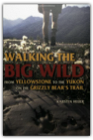
Leviathan: With Selected Variants from the Latin Edition of 1668
Thomas Hobbes, Edwin Curley
0872201775
This new edition of Hobbe's masterpiece is uniquely suited to meet the needs of both student and scholar. It offers a brilliant introduction by Edwin Curley, modernised spelling and punctuation of the text, and a key annotative feature found in no other edition: the inclusion, along with historical and interpretive notes, of the most significant variants between the English version of 1651 and the Latin version of 1668. A glossary of seventeenth century English terms and indexes of persons, subjects, and scriptural passages help make this the most thoughtfully conceived edition of Leviathan available.

Principles of Physical Biochemistry
Kensal E van Holde, Curtis Johnson, Pui Shing Ho
0137204590
This book offers the most up-to-date look at the theory and techniques used in the study of the physical chemistry of biological and biochemical molecules. Ken van Holde is one of the leading experts in biophysical chemistry and a well-known author (he is coauthor of an introductory biochemistry book). Comprehensive coverage of all physical techniques currently used by practicing biochemists, including. Up-to-date treatment of NMR and X-ray diffraction. Comprehensive coverage of other types of spectroscopy.
Computability and Complexity Theory
Steven Homer, Alan L. Selman
0387950559
Intended for use in an introductory graduate course in theoretical computer science, this text contains material that should be core knowledge in the theory of computation for all graduates in computer science. It is self-contained and is best suited for a one semester course. The text starts with classical computability theory which forms the basis for complexity theory. This has the pedagogical advantage that students learn a qualitative subject before advancing to a quantitative one. Since this is a graduate course, students should have some knowledge of such topics as automata theory, formal languages, computability theory, or complexity theory.

Chemical Kinetics and Reaction Dynamics
Paul L. Houston
0072435372
Chemical Kinetics and Reaction Dynamics is a modern textbook for advanced courses. Houston emphasizes the essential principles of kinetics and dynamics through relevant examples and current research, providing students with a clear, basic understanding.

Voices: An Inspector Erlendur Novel
Arnaldur Indridason
0312428065
Inspector Erlendur Returns In this Award-winning International Bestseller.The Christmas rush is at its peak in a grand Reykjavík hotel when Inspector Erlendur is called in to investigate a murder. The hotel Santa has been stabbed to death, and Erlendur and his fellow detectives find no shortage of suspects between the hotel staff and the international travelers staying for the holidays. As Christmas Day approaches, Erlendur must deal with his difficult daughter, pursue a possible romantic interest, and untangle a long-buried web of malice and greed to find the murderer. Voices is a brutal, soulful noir from the chilly shores of Iceland.

Arctic Chill: An Inspector Erlendur Novel
Arnaldur Indridason
0312655304
INSPECTOR ERLENDUR RETURNS IN THIS ICY, INTENSE REYKJAVIK THRILLEROn an icy January day, the Reykjavik police are called to a block of apartments where a body has been found in the garden: a young, dark-skinned boy is frozen to the ground in a pool of blood. Erlendur and his team embark on their investigation and soon unearth tensions simmering beneath the surface of Iceland’s outwardly liberal, multicultural society. Meanwhile, the boy’s murder forces Erlendur to confront the tragedy in his own past. Master crime writer Arnaldur Indridason's Arctic Chill renders a vivid portrait of Iceland's brutal, little-known culture wars in a taut, fast-paced police procedural.
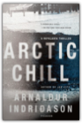
Classical Thought
Terence Irwin
0192891774
Covering over 1000 years of classical philosophy from Homer to Saint Augustine, this accessible, comprehensive study details the major philosophies and philosophers of the period—the Pre-Socratics, Socrates, Plato, Aristotle, Stoicism, Epicureanism, and Neoplatonism. Though the emphasis is on questions of philosophical interest, particularly ethics, the theory of knowledge, philosophy of mind, and philosophical theology, Irwin includes discussions of the literary and historical background to classical philosophy as well as the work of other important thinkers—Greek tragedians, historians, medical writers, and early Christian writers. The most complete one-volume introduction to ancient philosophy available, the book will be an invaluable survey for students of philosophy and classics and general readers.
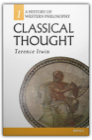
Video Night in Kathmandu: And Other Reports from the Not-So-Far East
Pico Iyer
0679722165
Mohawk hair-cuts in Bali, yuppies in Hong Kong and Rambo rip-offs in the movie houses of Bombay are just a few of the jarring images that Iyer brings back from the Far East.

Principles of Neural Science
Eric Kandel, James Schwartz, Thomas Jessell
0838577016
A Doody's Core Title for 2011!5 STAR DOODY'S REVIEW!
"This is a simply wonderful book that makes accessible in one place all the details of how the neuron and brain work. The writing is clear. The drawings are elegant and educational. The book is a feast for both the eye and mind. The richness, the beauty, and the complexity of neuroscience is all captured in this superb book."—Doody's Review Service Now in resplendent color, the new edition continues to define the latest in the scientific understanding of the brain, the nervous system, and human behavior. Each chapter is thoroughly revised and includes the impact of molecular biology in the mechanisms underlying developmental processes and in the pathogenesis of disease. Important features to this edition include a new chapter - Genes and Behavior; a complete updating of development of the nervous system; the genetic basis of neurological and psychiatric disease; cognitive neuroscience of perception, planning, action, motivation and memory; ion channel mechanisms; and much more.

Neue Bahnhofe in Berlin
Christel Kapitzki
3931321894
Object-Oriented Programming in COMMON LISP: A Programmer's Guide to CLOS
Sonya E. Keene
0201175894
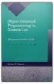
The Practice of Programming
Brian W. Kernighan, Rob Pike
020161586X
Provides advice, real-world examples in C, C++, Java, and a variety of special purpose languages. Includes debugging, testing, performance, portability, design, interfaces, style, and notation. Softcover. DLC: Computer programming.

C Programming Language
Brian W. Kernighan, Dennis M. Ritchie
0131103628
The authors present the complete guide to ANSI standard C language programming. Written by the developers of C, this new version helps readers keep up with the finalized ANSI standard for C while showing how to take advantage of C's rich set of operators, economy of expression, improved control flow, and data structures. The 2/E has been completely rewritten with additional examples and problem sets to clarify the implementation of difficult language constructs. For years, C programmers have let K&R guide them to building well-structured and efficient programs. Now this same help is available to those working with ANSI compilers. Includes detailed coverage of the C language plus the official C language reference manual for at-a-glance help with syntax notation, declarations, ANSI changes, scope rules, and the list goes on and on.

Introductory Real Analysis
A. N. Kolmogorov, S. V. Fomin
0486612260
Self-contained and comprehensive, this elementary introduction to real and functional analysis is readily accessible to those with background in advanced calculus. It covers basic concepts and introductory principles in set theory, metric spaces, topological and linear spaces, linear functionals and linear operators, and much more. 350 problems. 1970 edition.

This Is Your Brain on Music: The Science of a Human Obsession
Daniel J. Levitin
0452288525
Music, Science, and the Brain are more closely related than you think. Daniel J. Levitin, James McGill Professor of Psychology and Music at McGill University, shows you why this is. In this groundbreaking union of art and science, rocker-turned-neuroscientist Daniel J. Levitin (The World in Six Songs) explores the connection between music, its performance, its composition, how we listen to it, why we enjoy it, and the human brain. Drawing on the latest research and on musical examples ranging from Mozart to Duke Ellington to Van Halen, Levitin reveals: How composers produce some of the most pleasurable effects of listening to music by exploiting the way our brains make sense of the worldWhy we are so emotionally attached to the music we listened to as teenagers, whether it was Fleetwood Mac, U2, or Dr. DreThat practice, rather than talent, is the driving force behind musical expertiseHow those insidious little jingles (called earworms) get stuck in our headTaking on prominent thinkers who argue that music is nothing more than an evolutionary accident, Levitin poses that music is fundamental to our species, perhaps even more so than language. A Los Angeles Times Book Award finalist, This Is Your Brain on Music will attract readers of Oliver Sacks, as it is an unprecedented, eye-opening investigation into an obsession at the heart of human nature.

Introductory Quantum Mechanics
Richard Liboff
0805387145
Careful and detailed explanations of challenging concepts in Introductory Quantum Mechanics, Fourth Edition, and comprehensive and up-to-date coverage, continue to set the standard in physics education. In the new edition of this best-selling quantum mechanics book, a new chapter on the revolutionary topic of of quantum computing (not currently covered in any other book at this level) and thorough updates to the rest of the book bring it up to date.
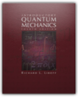
Locke: Two Treatises of Government
John Locke, Peter Laslett
0521357306
This is a new revised version of Dr. Laslett's standard edition of Two Treatises. First published in 1960, and based on an analysis of the whole body of Locke's publications, writings, and papers. The Introduction and text have been revised to incorporate references to recent scholarship since the second edition and the bibliography has been updated.

How to Rock Climb!, 4th
John Long
0762724714
How to Rock Climb!, now in its fourth edition, is the world's top instructional book on climbing. All the fundamentals—from ethics to getting up the rock—are presented in John Long's classic style. Revised and updated to reflect the modern standards of equipment, technique, and training methods, this guide includes sections on face climbing; crack climbing; ropes, anchors, and belays; getting off the rock; sport climbing; and much more. It is the essential how-to book for rock climbers everywhere.
Pyramid
David Macaulay
0395321212
Through concise text and richly detailed black and white illustrations we come to know the philosophy of life and death in ancient Egypt.

Castle
David Macaulay
0395329205
The word itself conjures up mystery, romance, intrigue, and grandeur. What could be more perfect for an author/illustrator who has continually stripped away the mystique of architectural structures that have long fascinated modern man? With typical zest and wry sense of humor punctuating his drawings, David Macaulay traces the step-by-step planning and construction of both castle and town.

City: A Story of Roman Planning and Construction
David Macaulay
0395349222
Text and black and white illustrations show how the Romans planned and constructed their cities for the people who lived within them.
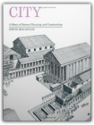
Mill
David Macaulay
0395520193
The mills at Wicksbridge are imaginary, but their planning, construction, and operation are quite typical of mills developed in New England throughout the nineteenth century.

The Return of the Dancing Master
Henning Mankell
1565848608
The new thriller from the internationally bestselling author of the Kurt Wallander mystery series.It would be nearly two hours before he died. As if in a borderland of horror between the nagging pain and the hopeless will to live, he was taken back in time, to the occasion when he engaged the fate that had now caught up with him.—from The Return of the Dancing Master
December 12, 1945. Nazi Germany lies in ruins as a British warplane lands in Buckeburg. A man carrying a small black bag quickly disembarks and travels to Hameln, where he disappears behind the prison gates. Early the next day, nine male and three female war criminals are hanged.
Fifty-four years later, retired policeman Herbert Molin is found brutally slaughtered on his remote farm in Härjedalen, Sweden. At the murder scene, the police discover strange tracks in the blood on the floor...as if someone had been practicing the tango.
Stefan Lindman, a young police officer on extended sick leave, hears about the murder of his former colleague and decides to investigate it himself. Lindman's inquiry becomes increasingly complex and dangerous as he uncovers the links between Herbert Molin's death and a global web of neo-Nazi activity.
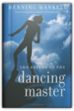
The Marx-Engels Reader
Karl Marx, Friedrich Engels, Robert C. Tucker
039309040X
This revised and enlarged edition of the leading anthology provides the essential writings of Marx and Engels—those works necessary for an introduction to Marxist thought and ideology.

Physical Chemistry: A Molecular Approach
Donald A. McQuarrie, John D. Simon
0935702997
As the first modern physical chemistry textbook to cover quantum mechanics before thermodynamics and kinetics, this book provides a contemporary approach to the study of physical chemistry. By beginning with quantum chemistry, students will learn the fundamental principles upon which all modern physical chemistry is built. The text includes a special set of "MathChapters" to review and summarize the mathematical tools required to master the material Thermodynamics is simultaneously taught from a bulk and microscopic viewpoint that enables the student to understand how bulk properties of materials are related to the properties of individual constituent molecules. This new text includes a variety of modern research topics in physical chemistry as well as hundreds of worked problems and examples.

Being Digital
Nicholas Negroponte
0679762906
In lively, mordantly witty prose, Negroponte decodes the mysteries—and debunks the hype—surrounding bandwidth, multimedia, virtual reality, and the Internet, and explains why such touted innovations as the fax and the CD-ROM are likely to go the way of the BetaMax. "Succinct and readable. . . . If you suffer from digital anxiety . . . here is a book that lays it all out for you."—Newsday.

Ohanian's Physics/Study Guide
Van E. Neie, Peter D. Riley
0393957527
Principles of Physics is a textbook for a one year algebra-based introduction physics course. The book is intended for students in the life sciences, the premedical curriculum, the earth and environmental sciences, and the liberal arts.Since for many students this is their first encounter with physics, I introduce new concepts by qualitative and intuitive discussions whenever possible. And to motivate students and to maintain their enthusiasm, I have drawn on examples from sports, biology, medicine, and everyday life, chosen to match the background and special interests of the students.

Principles of Program Analysis
Flemming Nielson, Hanne R. Nielson, Chris Hankin
3540654100
Program analysis utilizes static techniques for computing reliable information about the dynamic behavior of programs. Applications include compilers (for code improvement), software validation (for detecting errors) and transformations between data representation (for solving problems such as Y2K). This book is unique in providing an overview of the four major approaches to program analysis: data flow analysis, constraint-based analysis, abstract interpretation, and type and effect systems. The presentation illustrates the extensive similarities between the approaches, helping readers to choose the best one to utilize.

On the Genealogy of Morals and Ecce Homo
Friedrich Nietzsche, Walter Kaufmann
0679724621
The great philosopher's major work on ethics, along with ECCE HOMO, Nietzche's remarkable review of his life and works. Translated by Walter Kaufmann.
The Languages of Tolkien's Middle-Earth
Ruth S. Noel
0395291305
This is the book on all of Tolkien's invented languages, spoken by hobbits, elves, and men of Middle-earth — a dicitonary of fourteen languages, an English-Elvish glossary, all the runes and alphabets, and material on Tolkien the linguist.

Ultimate Techniques and Tactics
James Parinella, Eric Zaslow
073605104X
Improve your poaches, hone your hucks, and sharpen your cuts. With Ultimate Techniques & Tactics as your guide, you will master all of the offensive and defensive skills and principles critical to excelling in the sport.This essential handbook contains more than the mechanics of the game; it presents in-depth instruction on using key skills such as throwing, cutting, and catching in game situations. You will
-study flight paths to maximize your chances of completing passes;
-understand the finer points of catching; and
-learn when, where, and how to cut to gain yardage, improve disc position, and maintain possession.
You will also stun your opponents when your team employs the offensive and defensive strategies learned in Ultimate Techniques & Tactics. Use your complete knowledge of offensive skills to organize such offenses as zone, stack, weave, and split stack. And when every point matters, create an impenetrable line of defense to save the game. Disrupt your competitors' rhythm and timing using one-on–one, zone, or junk defenses like the clam.
Ultimate Techniques & Tactics is the first and best guide to the sport of Ultimate. Use it to become an Ultimate champion!
Hamlet - A User's Guide
Michael Pennington
0879100834
(Limelight). "Pennington's great experience of the play...love for it...depth of knowledge...of many productions and interpretations culminate in a book of infinite value to any actor, director and above all to any passionate playgoer...written with passion, humor and rigor...an excellent read." Ralph Fiennes

Types and Programming Languages
Benjamin C. Pierce
0262162091
A type system is a syntactic method for automatically checking the absence of certain erroneous behaviors by classifying program phrases according to the kinds of values they compute. The study of type systems—and of programming languages from a type-theoretic perspective — -has important applications in software engineering, language design, high-performance compilers, and security.This text provides a comprehensive introduction both to type systems in computer science and to the basic theory of programming languages. The approach is pragmatic and operational; each new concept is motivated by programming examples and the more theoretical sections are driven by the needs of implementations. Each chapter is accompanied by numerous exercises and solutions, as well as a running implementation, available via the Web. Dependencies between chapters are explicitly identified, allowing readers to choose a variety of paths through the material.The core topics include the untyped lambda-calculus, simple type systems, type reconstruction, universal and existential polymorphism, subtyping, bounded quantification, recursive types, kinds, and type operators. Extended case studies develop a variety of approaches to modeling the features of object-oriented languages.

Advanced Topics in Types and Programming Languages
Benjamin C. Pierce
0262162288
The study of type systems for programming languages now touches many areas of computer science, from language design and implementation to software engineering, network security, databases, and analysis of concurrent and distributed systems. This book offers accessible introductions to key ideas in the field, with contributions by experts on each topic.The topics covered include precise type analyses, which extend simple type systems to give them a better grip on the run time behavior of systems; type systems for low-level languages; applications of types to reasoning about computer programs; type theory as a framework for the design of sophisticated module systems; and advanced techniques in ML-style type inference.Advanced Topics in Types and Programming Languages builds on Benjamin Pierce's Types and Programming Languages (MIT Press, 2002); most of the chapters should be accessible to readers familiar with basic notations and techniques of operational semantics and type systems — the material covered in the first half of the earlier book.Advanced Topics in Types and Programming Languages can be used in the classroom and as a resource for professionals. Most chapters include exercises, ranging in difficulty from quick comprehension checks to challenging extensions, many with solutions.

The Republic Of Plato: Second Edition
Plato
0465069347
Long regarded as the most accurate rendering of Plato’s Republic that has yet been published, this widely acclaimed work is the first strictly literal translation of a timeless classic. This second edition includes a new introduction by Professor Bloom, whose careful translation and interpretation of The Republic was first published in 1968. In addition to the corrected text itself there is also a rich and valuable essayas well as indexeswhich will better enable the reader to approach the heart of Plato’s intention.

Plato: Complete Works
Plato, John M. Cooper, D. S. Hutchinson
0872203492
Outstanding translations by leading contemporary scholars — many commissioned especially for this volume — are presented here in the first single edition to include the entire surviving corpus of works attributed to Plato in antiquity. In his introductory essay, John Cooper explains the presentation of these works, discusses questions concerning the chronology of their composition, comments on the dialogue form in which Plato wrote, and offers guidance on approaching the reading and study of Plato's works. Also included are concise introductions to each translation, meticulous annotation designed to serve both scholar and general reader, and a comprehensive index. This handsome volume offers fine paper and a high-quality Smyth-sewn cloth binding in a sturdy elegant edition.
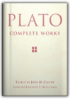
Cratylus
Plato, C. D. C. Reeve
0872204162
The Cratylus, Plato's sole dialogue devoted to the relation between language and reality, is acknowledged to be one of his masterpieces. But owing to its often enigmatic content no more than a handful of passages from it have played a part in the global evaluation of Plato's philosophy. This new English translation by C D C Reeve is the first since 1926, and incomparably the most helpful and accessible now available. It opens up the Cratylus to all philosophically interested readers, as well as to cultural historians and to those whose primary concern is the history of linguistics. The full and lucid introduction does much to illuminate the internal dynamic of this important text and to explain its place within Plato's oeuvre.

The Omnivore's Dilemma: A Natural History of Four Meals
Michael Pollan
1594200823
Make this your next book club selection and everyone saves.Get 15% off when you order 5 or more of this title for your book club.
Simply enter the coupon code POLLANOMNIVORE at checkout.
This offer does not apply to eBook purchases. This offer applies to only one downloadable audio per purchase.
What should we have for dinner?" To one degree or another this simple question assails any creature faced with a wide choice of things to eat. Anthropologists call it the omnivore's dilemma. Choosing from among the countless potential foods nature offers, humans have had to learn what is safe, and what isn't—which mushrooms should be avoided, for example, and which berries we can enjoy. Today, as America confronts what can only be described as a national eating disorder, the omnivore's dilemma has returned with an atavistic vengeance. The cornucopia of the modern American supermarket and fast-food outlet has thrown us back on a bewildering landscape where we once again have to worry about which of those tasty-looking morsels might kill us. At the same time we're realizing that our food choices also have profound implications for the health of our environment. The Omnivore's Dilemma is bestselling author Michael Pollan's brilliant and eye-opening exploration of these little-known but vitally important dimensions of eating in America.
Pollan has divided The Omnivore's Dilemma into three parts, one for each of the food chains that sustain us: industrialized food, alternative or "organic" food, and food people obtain by dint of their own hunting, gathering, or gardening. Pollan follows each food chain literally from the ground up to the table, emphasizing our dynamic coevolutionary relationship with the species we depend on. He concludes each section by sitting down to a meal—at McDonald's, at home with his family sharing a dinner from Whole Foods, and in a revolutionary "beyond organic" farm in Virginia. For each meal he traces the provenance of everything consumed, revealing the hidden components we unwittingly ingest and explaining how our taste for particular foods reflects our environmental and biological inheritance.
We are indeed what we eat-and what we eat remakes the world. A society of voracious and increasingly confused omnivores, we are just beginning to recognize the profound consequences of the simplest everyday food choices, both for ourselves and for the natural world. The Omnivore's Dilemma is a long-overdue book and one that will become known for bringing a completely fresh perspective to a question as ordinary and yet momentous as What shall we have for dinner?
A few facts and figures from The Omnivore's Dilemma: Of the 38 ingredients it takes to make a McNugget, there are at least 13 that are derived from corn. 45 different menu items at Mcdonald’s are made from corn. One in every three American children eats fast food every day. One in every five American meals today is eaten in the car. The food industry burns nearly a fifth of all the petroleum consumed in the United States—more than we burn with our cars and more than any other industry consumes. It takes ten calories of fossil fuel energy to deliver one calorie of food energy to an American plate. A single strawberry contains about five calories. To get that strawberry from a field in California to a plate on the east coast requires 435 calories of energy. Industrial fertilizer and industrial pesticides both owe their existence to the conversion of the World War II munitions industry to civilian uses—nerve gases became pesticides, and ammonium nitrate explosives became nitrogen fertilizers. ...
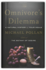
The Cathedral and the Bazaar: Musings on Linux and Open Source by an Accidental Revolutionary
Eric S. Raymond
1565927249
"This is how we did it." —Linus Torvalds, creator of the Linux kernelIt all started with a series of odd statistics. The leading challenger to Microsoft's stranglehold on the computer industry is an operating system called Linux, the product of thousands of volunteer programmers who collaborate over the Internet. The software behind a majority of all the world's web sites doesn't come from a big company either, but from a loosely coordinated group of volunteer programmers called the Apache Group. The Internet itself, and much of its core software, was developed through a process of networked collaboration.
The key to these stunning successes is a movement that has come to be called open source, because it depends on the ability of programmers to freely share their program source code so that others can improve it. In 1997, Eric S. Raymond outlined the core principles of this movement in a manifesto called "The Cathedral and the Bazaar," which was published and freely redistributed over the Internet.
Mr. Raymond's thinking electrified the computer industry. He argues that the development of the Linux operating system by a loose confederation of thousands of programmers—without central project management or control—turns on its head everything we thought we knew about software project management. Internet-enabled collaboration and free information sharing, not monopolistic control, is the key to innovation and product quality.
This idea was interesting to more than programmers and software project leaders. It suggested a whole new way of doing business, and the possibility of unprecedented shifts in the power structures of the computer industry.
The rush to capitalize on the idea of open source started with Netscape's decision to release its flagship Netscape Navigator product under open source licensing terms in early 1998. Before long, Fortune 500 companies like Intel, IBM, and Oracle were joining the party. By August 1999, when the leading Linux distributor, Red Hat Software, made its hugely successful public stock offering, it had become clear that open source was "the next big thing" in the computer industry.
This revolutionary book starts out with "A Brief History of Hackerdom"—the historical roots of the open-source movement—and details the events that led to the recognition of the power of open source. It contains the full text of "The Cathedral & the Bazaar," updated and expanded for this book, plus Mr. Raymond's other key essays on the social and economic dynamics of open source software development.
Open source is the competitive advantage in the Internet Age. The Cathedral & the Bazaar is a must for anyone who cares about the computer industry or the dynamics of the information economy. Already, billions of dollars have been made and lost based on the ideas in this book. Its conclusions will be studied, debated, and implemented for years to come.

Escape Routes: Further Adventure Writings of David Roberts
David Roberts
0898865093
In these twenty essays - some published here for the first time - Roberts ranges the globe, profiles explorers, and pursues his newest passions - backcountry archaeology and anthropology. From caving in the unexplored labyrinths of New Mexico to ascending Iceland's most famous mountain with Jon Krakauer to following the grueling Raid Gauloises race in the Patagonia wilderness to tracking Jeff Lowe on a new route on the Eiger - Roberts doesn't just write about these adventures, he lives them.

Discrete Mathematics and Its Applications
Kenneth H. Rosen
0072899050
This text is designed for the sophomore/junior level introduction to discrete mathematics taken by students preparing for future coursework in areas such as math, computer science and engineering. Rosen has become a bestseller largely due to how effectively it addresses the main portion of the discrete market, which is typically characterized as the mid to upper level in rigor. The strength of Rosen's approach has been the effective balance of theory with relevant applications, as well as the overall comprehensive nature of the topic coverage.
Principles of Mathematical Analysis
Walter Rudin
007054235X
The third edition of this well known text continues to provide a solid foundation in mathematical analysis for undergraduate and first-year graduate students. The text begins with a discussion of the real number system as a complete ordered field. (Dedekind's construction is now treated in an appendix to Chapter I.) The topological background needed for the development of convergence, continuity, differentiation and integration is provided in Chapter 2. There is a new section on the gamma function, and many new and interesting exercises are included.This text is part of the Walter Rudin Student Series in Advanced Mathematics.

The Handbook of Programming Languages (HPL): Imperative Programming Languages
Peter Salus, Peter H. Salus
1578700094
This handbook covers imperative programming languages. There are chapters on FORTRAN, C, Turbo Pascal and Icon. For each language, information on history, syntax, variables, tips and traps is provided.

The Complete Persepolis
Marjane Satrapi
0375714839
Here, in one volume: Marjane Satrapi's best-selling, internationally acclaimed memoir-in-comic-strips.Persepolis is the story of Satrapi's unforgettable childhood and coming of age within a large and loving family in Tehran during the Islamic Revolution; of the contradictions between private life and public life in a country plagued by political upheaval; of her high school years in Vienna facing the trials of adolescence far from her family; of her homecoming—both sweet and terrible; and, finally, of her self-imposed exile from her beloved homeland. It is the chronicle of a girlhood and adolescence at once outrageous and familiar, a young life entwined with the history of her country yet filled with the universal trials and joys of growing up.
Edgy, searingly observant, and candid, often heartbreaking but threaded throughout with raw humor and hard-earned wisdom—Persepolis is a stunning work from one of the most highly regarded, singularly talented graphic artists at work today.

Glacier Travel & Crevasse Rescue: Reading Glaciers, Team Travel, Crevasse Rescue Techniques, Routefinding, Expedition Skills 2nd Edition
Andrew Selters, Andy Selters
0898866588
Comprehensive & packed with information by a seasoned trainer for the American Alpine Institute. A must before stepping onto a glacier.
Programming Languages: Concepts and Constructs
Ravi Sethi
0201590654
Programming Languages: Concepts and Constructs, Second Edition retains the "character" of the original, emphasizing concepts and how they work together. This classic book has been thoroughly revised to provide readable coverage of the major programming paradigms. Dr. Sethi's treatment of the core concepts of imperative programming in languages like Pascal and C flows smoothly into object-oriented programming in C++ and Smalltalk. The charm of functional languages is illustrated by programs in standard ML and the Scheme dialect of Lisp. Logic programming is introduced using Prolog. Novices, who have been introduced to programming in some language, will learn from this book how related concepts work together while designers and implementers willp be exposed to the major programming paradigms. Example programs from the book are available as source code. These are available by anonymous ftp at ftp://ftp.aw.com/cseng/authors/sethi/pl2e. 0201590654B04062001

Troilus and Cressida
William Shakespeare, David M. Bevington, David Berington
0174435371
This edition of Troilus and Cressida provide s a clear and authoritative text, detailed notes and comment ary on the same pages as the text and an in-depth survey of critical approaches to the play. '
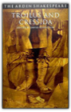
The Riddle of Scheherazade: And Other Amazing Puzzles
Raymond Smullyan
0156006065
“The most entertaining logician and set theorist who ever lived” (Martin Gardner) gives us an encore to The Lady or the Tiger?-a fiendishly clever, utterly captivating new collection of 225 brainteasers, puzzles, and paradoxes.

Advanced Programming in the UNIX
W. Richard Stevens
0201563177
Bestselling UNIX author W. Richard Stevens offers application developers and system programmers his professional, experience-based guidance on using the system call interface with C. In the first half of the book, Stevens describes more than 200 system calls and functions with a brief example program following each description. Having provided the basics, Stevens moves on to chapter-long examples. The book is applicable to all major UNIX releases, especially System V Release 4-including Solaris 2-and 4.4 BSD, including 386 BSD.

The C++ Programming Language: Special Edition
Bjarne Stroustrup
0201700735
More than three-quarters of a million programmers have benefited from this book in all of its editionsWritten by Bjarne Stroustrup, the creator of C++, this is the world's most trusted and widely read book on C++.
For this special hardcover edition, two new appendixes on locales and standard library exception safety (also available at www.research.att.com/~bs/) have been added. The result is complete, authoritative coverage of the C++ language, its standard library, and key design techniques. Based on the ANSI/ISO C++ standard, The C++ Programming Language provides current and comprehensive coverage of all C++ language features and standard library components.
For example:abstract classes as interfacesclass hierarchies for object-oriented programmingtemplates as the basis for type-safe generic softwareexceptions for regular error handlingnamespaces for modularity in large-scale softwarerun-time type identification for loosely coupled systemsthe C subset of C++ for C compatibility and system-level workstandard containers and algorithmsstandard strings, I/O streams, and numericsC compatibility, internationalization, and exception safetyBjarne Stroustrup makes C++ even more accessible to those new to the language, while adding advanced information and techniques that even expert C++ programmers will find invaluable.

The Elements of Style
William Strunk, E. B. White
0205313426
You know the authors' names. You recognize the title. You've probably used this book yourself. This is The Elements of Style, the classic style manual, now in a fourth edition. A new Foreword by Roger Angell reminds readers that the advice of Strunk & White is as valuable today as when it was first offered.This book's unique tone, wit and charm have conveyed the principles of English style to millions of readers. Use the fourth edition of "the little book" to make a big impact with writing.
The Elements of Style
William, Jr. : Whilte, E. B. Strunk
B000P63WTA
The classic manual on concise writing in English. Author William Strunk, Jr. says it all - "This book aims to give in brief space the principal requirements of plain English style."

An Introduction to Error Analysis: The Study of Uncertainties in Physical Measurements
John R. Taylor
093570275X
This best-selling text by John Taylor, now released in its second edition, introduces the study of uncertainties to lower division science students. Assuming no prior knowledge, the author introduces error analysis through the use of familiar examples ranging from carpentry to well-known historic experiments. Pertinent worked examples, simple exercises throughout the text, and numerous chapter-ending problems combine to make the book ideal for use in physics, chemistry, and engineering lab courses. The first edition of this book has been translated into six languages.
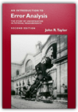
The Letters of J.R.R. Tolkien
J. R. R. Tolkien, Christopher Tolkien, Humphrey Carpenter
0618056998
'...If you wanted to go on from the end of The Hobbit I think the ring would be your inevitable choice as the link. If then you wanted a large tale, the Ring would at once acquire a capital letter; and the Dark Lord would immediately appear. As he did, unasked, on the hearth at Bag End as soon as I came to that point. So the essential Quest started at once. But I met a lot of things along the way that astonished me. Tom Bombadil I knew already; but I had never been to Bree. Strider sitting in the corner of the inn was a shock, and I had no more idea who he was than Frodo did. The Mines of Moria had been a mere name; and of Lothlorien no word had reached my mortal ears till I came there.' — J.R.R. Tolkien to W.H. Auden, June 7, 1955J.R.R. Tolkien, cherished author of The Hobbit, The Lord of the Rings, and The Silmarillion, was one of the twentieth century's most prolific letter writers. Over the years he wrote a mass of letters — to his publishers, his family, to friends, and to fans of his books — which record the history and composition of his works and his reaction to subsequent events.
By turns thoughtful, impish, scholarly, impassioned, playful, vigorous, and gentle, Tolkien poured his heart and mind into a great stream of correspondence to intimate friends and unknown admirers all over the world. From this collection one sees a mind of immense complexity and many layers — artistic, religious, charmingly eccentric, sentimental, and ultimately brilliant.
Now newly expanded with a detailed index, this collection provides an invaluable record that sheds much light on Tolkien's creative genius, his thoughts and feelings about his own work, and the evolution of his grand design for the creation of a whole new world — Middle-earth.
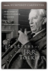
Bicycling Science
David Gordon Wilson
0262731541
The bicycle is almost unique among human-powered machines in that it uses human muscles in a near-optimum way. This new edition of the bible of bicycle builders and bicyclists provides just about everything you could want to know about the history of bicycles, how human beings propel them, what makes them go faster, and what keeps them from going even faster. The scientific and engineering information is of interest not only to designers and builders of bicycles and other human-powered vehicles but also to competitive cyclists, bicycle commuters, and recreational cyclists.The third edition begins with a brief history of bicycles and bicycling that demolishes many widespread myths. This edition includes information on recent experiments and achievements in human-powered transportation, including the "ultimate human- powered vehicle," in which a supine rider in a streamlined enclosure steers by looking at a television screen connected to a small camera in the nose, reaching speeds of around 80 miles per hour. It contains completely new chapters on aerodynamics, unusual human-powered machines for use on land and in water and air, human physiology, and the future of bicycling. This edition also provides updated information on rolling drag, transmission of power from rider to wheels, braking, heat management, steering and stability, power and speed, and materials. It contains many new illustrations.

Four Colors Suffice: How the Map Problem Was Solved
Robin Wilson
0691120234
On October 23, 1852, Professor Augustus De Morgan wrote a letter to a colleague, unaware that he was launching one of the most famous mathematical conundrums in history—one that would confound thousands of puzzlers for more than a century. This is the amazing story of how the "map problem" was solved.The problem posed in the letter came from a former student: What is the least possible number of colors needed to fill in any map (real or invented) so that neighboring counties are always colored differently? This deceptively simple question was of minimal interest to cartographers, who saw little need to limit how many colors they used. But the problem set off a frenzy among professional mathematicians and amateur problem solvers, among them Lewis Carroll, an astronomer, a botanist, an obsessive golfer, the Bishop of London, a man who set his watch only once a year, a California traffic cop, and a bridegroom who spent his honeymoon coloring maps. In their pursuit of the solution, mathematicians painted maps on doughnuts and horseshoes and played with patterned soccer balls and the great rhombicuboctahedron.
It would be more than one hundred years (and countless colored maps) later before the result was finally established. Even then, difficult questions remained, and the intricate solution—which involved no fewer than 1,200 hours of computer time—was greeted with as much dismay as enthusiasm.
Providing a clear and elegant explanation of the problem and the proof, Robin Wilson tells how a seemingly innocuous question baffled great minds and stimulated exciting mathematics with far-flung applications. This is the entertaining story of those who failed to prove, and those who ultimately did prove, that four colors do indeed suffice to color any map.

The Professor and the Madman: A Tale of Murder, Insanity, and the Making of The Oxford English Dictionary
Simon Winchester
006099486X
"The Professor and the Madman," masterfully researched and eloquently written, is an extraordinary tale of madness, genius, and the incredible obsessions of two remarkable men that led to the making of the "Oxford English Dictionary"—and literary history. The compilation of the "OED," begun in 1857, was one of the most ambitious projects ever undertaken. As definitions were collected, the overseeing committee, led by Professor James Murray, discovered that one man, Dr. W C. Minor, had submitted more than ten thousand. When the committee insisted on honoring him, a shocking truth came to light: Dr. Minor, an American Civil War veteran, was also an inmate at an asylum for the criminally insane.

The Formal Semantics of Programming Languages: An Introduction
Glynn Winskel
0262231697
The Formal Semantics of Programming Languages provides the basic mathematical techniques necessary for those who are beginning a study of the semantics and logics of programming languages. These techniques will allow students to invent, formalize, and justify rules with which to reason about a variety of programming languages. Although the treatment is elementary, several of the topics covered are drawn from recent research, including the vital area of concurency. The book contains many exercises ranging from simple to miniprojects.Starting with basic set theory, structural operational semantics is introduced as a way to define the meaning of programming languages along with associated proof techniques. Denotational and axiomatic semantics are illustrated on a simple language of while-programs, and fall proofs are given of the equivalence of the operational and denotational semantics and soundness and relative completeness of the axiomatic semantics. A proof of Godel's incompleteness theorem, which emphasizes the impossibility of achieving a fully complete axiomatic semantics, is included. It is supported by an appendix providing an introduction to the theory of computability based on while-programs.
Following a presentation of domain theory, the semantics and methods of proof for several functional languages are treated. The simplest language is that of recursion equations with both call-by-value and call-by-name evaluation. This work is extended to lan guages with higher and recursive types, including a treatment of the eager and lazy lambda-calculi. Throughout, the relationship between denotational and operational semantics is stressed, and the proofs of the correspondence between the operation and denotational semantics are provided. The treatment of recursive types - one of the more advanced parts of the book - relies on the use of information systems to represent domains. The book concludes with a chapter on parallel programming languages, accompanied by a discussion of methods for specifying and verifying nondeterministic and parallel programs.

Zinn & the Art of Road Bike Maintenance
Lennard Zinn
1884737706
From shifters to derailleurs, pedals to handlebars, this book covers every component of a road bike. It helps new bike owners tackle simple to advanced projects, listing the tools needed, explaining bike components, and demonstrating with detailed illustrations how to work on each part.

Chemistry
Steven S. Zumdahl
0669324620